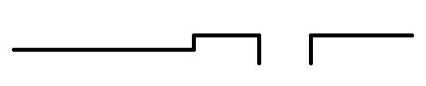
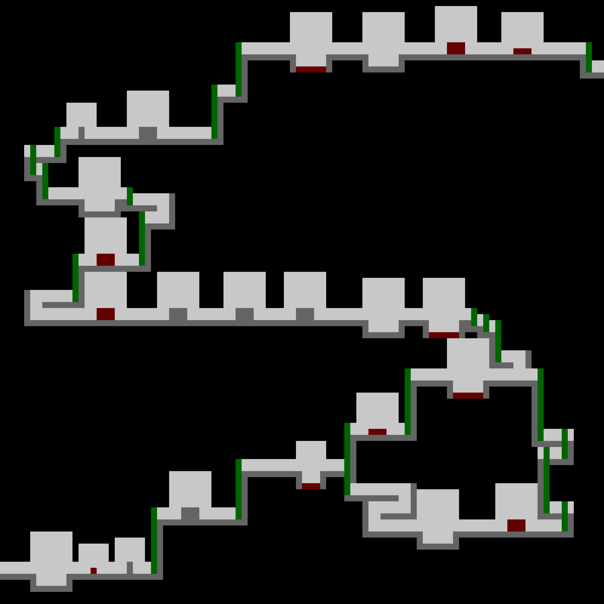
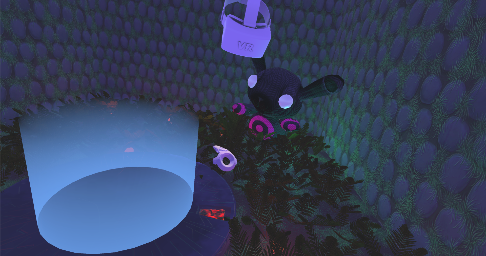
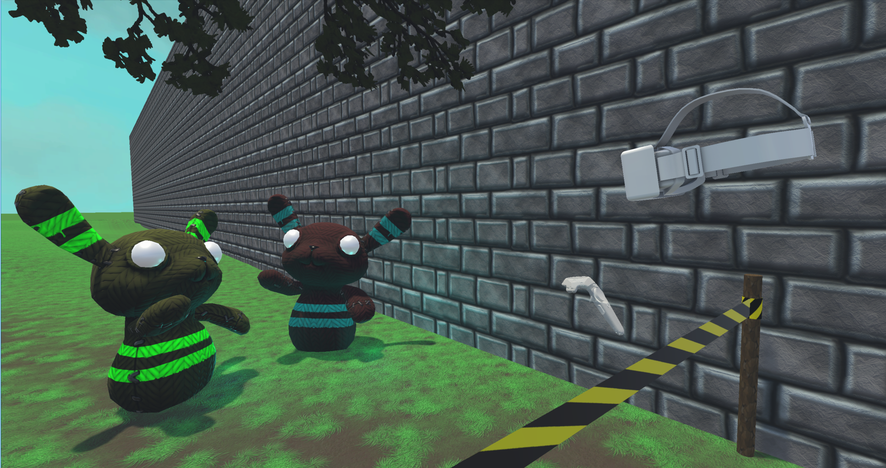
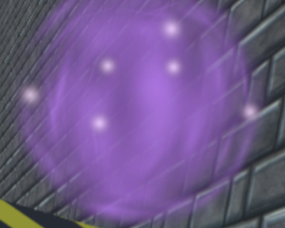
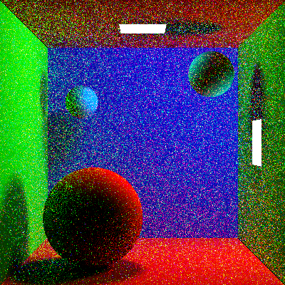
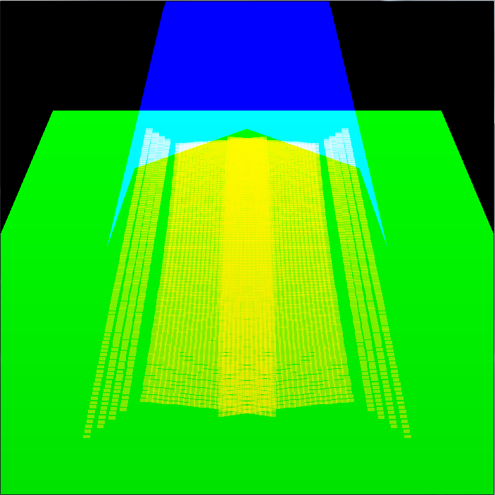
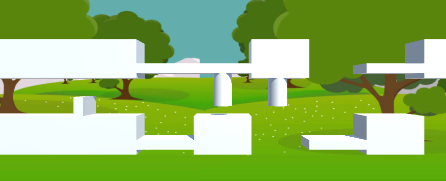

Sandra Tråvén
Below are some of my own and shared projects
Master Thesis: Procedural world generator for platform games
My master thesis is about creating a world generator for a platform game.
The generator creates a rhythm simulating how a player would press keys or buttons when playing
a level, where every button press represents the use of one of the character’s abilities.
Then obstacles are placed to match the abilities and a level is formed that can be cleared
using the same abilities and timing as in the generated rhythm.
An example can be that the rhythm includes running for five seconds and also pressing the jump button two times,
shown as the boxes on the time line below. The first jump press is smaller than the second one so the two jumps have different
durations. The character’s movement can be seen below, together with an example level with a little step that makes
the player do a small jump and then a gap that makes the player do a longer jump, matching the rhythm.


This method was created by Gillian Smith, Mike Treanor, Jim Whitehead and Michael Mateas and was used to create levels that went from left to right with some height differences but never going backwards. I wanted to build a world where the path could go in any direction and therefore had to alter the original method to fill a room. The generation can be controlled through a set of parameters and new obstacles and abilties can be added. An example room can look like this:
Light gray tiles mean air, dark gray mean ground, green elevator and red spikes. Black tiles are empty tiles.
Co World Detectives - a Social VR game
Together with a classmate I developed an interactive VR game which gives a social experiance in VR for two people. Here is an example image from the game.
The game is developed for HTC Vive. To integrate the social aspect into the game, one player wears the headset and holds one hand controller while the other player holds the second controller. The player without headset can control where it looks inside the game world by turning it's hand controller. The view is then shown on a separate screen, like a TV or a computer screen. In the story of the game, the player with the headset is a human who can interact with objects in the world. The other player is a spirit who can see things which the human can't see but cannot interact with any objects. The spirit can see the human's headset and controller while the human can see the spirits controller in the form of a pink cloud, as seen in the images below.

The human and spirit must work together to solve puzzles that will take them further into the game. It is possible to involve more people who can watch the spirit's screen and give suggestions on what to do. While developing this game, user tests were made every other week which gave new insights in how to design the different puzzels. Much of the game's fundamental mechanics have changed after gaining more knowledge about how the users play. For example, the two players started with one shared view. Having control over one view each gives the players the possibility to explore more on their own and follow their curiosity. This is an innovative and creative usage of a VR system where we have created a unique opportunity to collaborate in an entertaining environment. We think that this is a first step to make VR experiences much more social.
Varsom Games
A game system that gives a gaming console feeling. Phones are used as controls to play games together on a shared screen. The code is found on Github.
C Awards 2015 - Varsom Games from Visualiseringscenter C on Vimeo. The video is in Swedish but hopefully it gives some understanding about the project.
Global illumination
A ray tracer for lambertian reflectors and area light sources. The code is found on Github.
A room that is closed on all sides except the one with the camera and contains three implicit surfaces (spheres) and two area light sources. The walls and spheres are Lambertian reflectors. The image is 400x400 pixels large and was rendered with four rays per pixel.
Realistic real-time underwater caustics
A simulation of how light is refracted through water to form caustics. Made by me alone in OpenGL. The code is found on Github and uses shaders to render different passes to different textures that are used to make the final image.
The blue is the water surface, the green is a plane below the water and the yellow dots are the positions where the photons emitted from the light source landed. The light source is straight above the water and the camera is in front of the scene looking down at the plane.
DICE programming competition 2016
Me and my friend participated in DICE programming competition 2016 and our result is a 2D platformer game with 3D graphics as in the image below. The code can be found on Github.
The player is the small cube on the left. It can jump and duck to get through the floor. The floor tiles and obstacles are randomly generated.